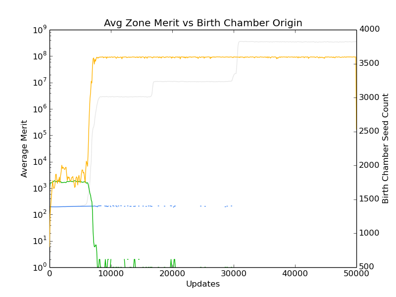

Right, so I didn't do anything on Saturday OR Sunday.
The thing I had to think about was how to track the gene-flow.
Whee! I chatted with Charles and he got me back on a workable path.
The key bit here is two points
The basic hypothesis
Prerequisites.
Ok, once I'm sure I can get that bit working
KEEP IT SIMPLE, STUPID
Implemented tracking of the mating preferences by zone. About to implement the mating display output also by zone.
Implemented a raw output, so I can just pull in the data myself, and do whatever analysis.
I've actually done quite a bit of work the last few days.
Secondly, I've been chasing a problem where my populations are dying out in some of the zones. It varies depending on the seed. :/ I first noticed it because my female_mating_preference file was starting to go static on one side. So, right now I can see that my birth chambers are filling up with those organisms that are from the living zone, but I don't know if it's just that they are submitting seeds SO MUCH FASTER that they keep pushing out the seeds from the other zone. It's not a ridiculous scenario.
To confirm that, i'm doing some data analysis to pull out the counts of seeds in my birth-chambers, along with the merit of each of the parents. If they are preferentially spamming the birth chamber, then it should show up as much higher merit than the competition, correlating with a drop in the contents of the birthchamber for the opposing zone.
rosiec@Weir:~/Dropbox/School Docs/Research/AvidaDev/avida_dev_sexual_selection_testing/data_C_birthrecord/birth_chamber/summary$ for i in {1..501}; do echo $i; python ~/Dropbox/School\ Docs/Research/research_scripts/common/extract_line_on_condition.py 11 "< 1800" ../bc-$i"00.dat" | wc -l >> zone1_timeseries.dat ; done rosiec@Weir:~/Dropbox/School Docs/Research/AvidaDev/avida_dev_sexual_selection_testing/data_C_birthrecord/birth_chamber/summary$ for i in {1..501}; do echo $i; python ~/Dropbox/School\ Docs/Research/research_scripts/common/extract_line_on_condition.py 11 "> 1799" ../bc-$i"00.dat" | wc -l >> zone2_timeseries.dat ; done rosiec@Weir:~/Dropbox/School Docs/Research/AvidaDev/avida_dev_sexual_selection_testing/data_C_birthrecord/birth_chamber/summary$ for i in {1..501}; do echo $i; python ~/Dropbox/School\ Docs/Research/research_scripts/common/extract_line_on_condition.py 11 "< 1800" ../bc-$i"00.dat" > tmp; python ~/Dropbox/School\ Docs/Research/research_scripts/common/extract_single_column_to_csv.py -c 3 tmp >> zone1_merit_timeseries.csv ; done rosiec@Weir:~/Dropbox/School Docs/Research/AvidaDev/avida_dev_sexual_selection_testing/data_C_birthrecord/birth_chamber/summary$ for i in {1..501}; do echo $i; python ~/Dropbox/School\ Docs/Research/research_scripts/common/extract_line_on_condition.py 11 "> 1799" ../bc-$i"00.dat" > tmp; python ~/Dropbox/School\ Docs/Research/research_scripts/common/extract_single_column_to_csv.py -c 3 tmp >> zone2_merit_timeseries.csv ; done rosiec@Weir:~/Dropbox/School Docs/Research/AvidaDev/avida_dev_sexual_selection_testing/data_C_birthrecord/birth_chamber/summary$ python ~/Dropbox/School\ Docs/Research/research_scripts/common/extract_single_column_to_csv.py 1 zone1_timeseries.dat > bc_count_zone1.csv rosiec@Weir:~/Dropbox/School Docs/Research/AvidaDev/avida_dev_sexual_selection_testing/data_C_birthrecord/birth_chamber/summary$ python ~/Dropbox/School\ Docs/Research/research_scripts/common/extract_single_column_to_csv.py 1 zone2_timeseries.dat > bc_count_zone2.csv rosiec@Weir:~/Dropbox/School Docs/Research/AvidaDev/avida_dev_sexual_selection_testing/data_C_birthrecord/birth_chamber/summary$ python ~/Dropbox/School\ Docs/Research/research_scripts/common/extract_single_column_to_csv.py -s "," 1 zone1_merit_timeseries.csv > bc_merit_zone1.csv rosiec@Weir:~/Dropbox/School Docs/Research/AvidaDev/avida_dev_sexual_selection_testing/data_C_birthrecord/birth_chamber/summary$ python ~/Dropbox/School\ Docs/Research/research_scripts/common/extract_single_column_to_csv.py -s "," 1 zone2_merit_timeseries.csv > bc_merit_zone2.csv caninoko@dev-intel14:~/tmp$ python ~/research_scripts/graph_generation/plot_from_csv.py -t "Avg Zone Merit vs Birth Chamber Origin" -x "Updates" --xtick_multiplier 100 -w "Birth Chamber Seed Count" -y "Average Merit" --ylog --alt_axis 3 bc_all_stats.png bc_merit_zone1.csv bc_merit_zone2.csv bc_count_zone1.csv bc_count_zone2.csv

Right right. So, exactly as I suspected! Which is super annoying. I'm going to have to separate the birth chambers.
This also leads to concerns about a population wiping out the other after they are unified, because even if I separate the birth chambers by zone, they'll still get un-separated when I drop the wall. Essentially, they're competing for breeding space. :( At least my initial experimental setup isn't threatened, since I'm just measuring whether they mate as soon as I drop the wall.
Erm, another option is to not fully drop the wall. Rather, keep the zones up, but just drop the mating restriction. This will take some code to look in the whole array for mates, even though organisms are only depositing their seed in their side of the array. That's fine.